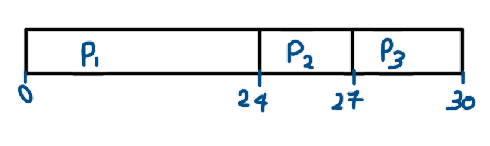

FIRST COME FIRST SERVE ALGORITHM
FCFS provides an efficient, simple and error-free process scheduling algorithm that saves valuable CPU resources. It uses nonpreemptive scheduling in which a process is automatically queued and processing occurs according to an incoming request or process order. FCFS derives its concept from real-life customer service.
First-come-first-served (FCFS )
➢A READY queue for storing ready processes that are initialised by Job scheduler.
➢When a process is in RUNNING state, its
execution will be completed in one go, that is,
these is no waiting state in this algorithm.
➢ Only Arrival Time is taken into account.
➢Average turnaround time (τ ) is normally huge here.
➢Total time needed for every process completed divided by the number of processes in the
queue.
➢Depends on how the processes are queued in the READY queue.
➢ Suffers from the problem of “Convey Effect
Suppose there are three processes in a queue: P1, P2 and P3. P1 is placed in the processing register with a waiting time of zero seconds and 10 seconds for complete processing. The next process, P2, must wait 10 seconds and is placed in the processing cycle until P1 is processed. Assuming that P2 will take 15 seconds to complete, the final process, P3, must wait 25 seconds to be processed. FCFS may not be the fastest process scheduling algorithm, as it does not check for priorities associated with processes. These priorities may depend on the processes' individual execution times.

EXAMPLE OF FCFS
| PROCESS | BURST TIME |
|---|---|
| P1 | 24 |
| P2 | 3 |
| P3 | 3 |
The Gantt Chart of the above example is:

Turn around time
=(24+27+30)/3
=27
Average waiting time
=(0+24+27)/3
=17